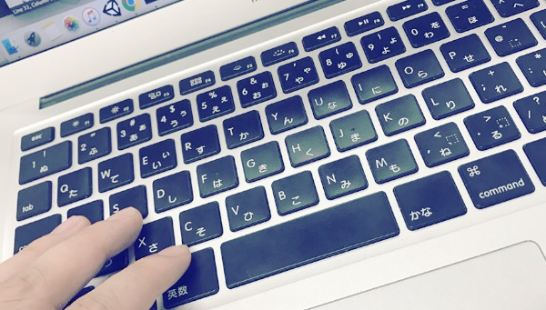

About
はじめまして、ぱちお(patio)です。
Web(Ruby on Rails、JavaScript)を中心にいろいろ作っています。二次創作多めで百合やらNLが好き。好きな作品はかなり雑食です。メインはVOCALOID、東方、艦これ、まどマギ、プリキュアあたり。



Achievement
今までのイベント参加や仕事等のまとめです
| 年月 | イベント名 | 功績 |
|---|---|---|
| 2013/10 | 東方紅楼夢9 | サークル「General Monkeys」で参加 |
| 2014/10 | 東方紅楼夢10 | サークル「PatioGlass」で参加 |
| 2014/11 | 全国高校・大学ソフトウェアコンテストあいちゃれ | 優秀賞・pixiv賞・メンバーズ賞 |
| 2015/01 | マスコットアプリ文化祭2014 | ユニティちゃん賞・キャラクターコラボ賞 |
| 2015/03 | 学校の某賞 | 優秀賞 |
| 2015/04 | M3-2015春 | ジャケット担当 |
| 2015/10 | 東方紅楼夢11 | サークル「PatioGlass」で参加 |
| 2015/10 | M3-2015秋 | ジャケット担当 |
| 2015/11 | 全国高校・大学ソフトウェアコンテストあいちゃれ | ファイナリスト出場 |
| 2015/12 | コミックマーケット89 | サークル「PatioGlass」で参加 |
| 2015/12 | 株式会社ジースタイラス様からシール作成依頼 | シールデザイン担当 |
| 2016/03 | 初音ミク -Project DIVA- Xエンドクレジット | 一般公募で採用 |
| 2016/03 | 学校の某賞 | 教育賞 |
| 2016/04 | M3-2016春 | サークル「PND音楽館」のジャケット担当 |
| 2016/05 | Hack U | 学部長賞・Happy Hacking賞 |
| 2016/08 | コミックマーケット90 | サークル「PND音楽館」のジャケット担当 |
| 2016/10 | 東方紅楼夢12 | サークル「PatioGlass」で参加 |
| 2016/11 | 全国高校・大学ソフトウェアコンテストあいちゃれ | 朝日ネットmanaba賞 |
Contact
お仕事の依頼等はメールかTwitterの方にお願いします